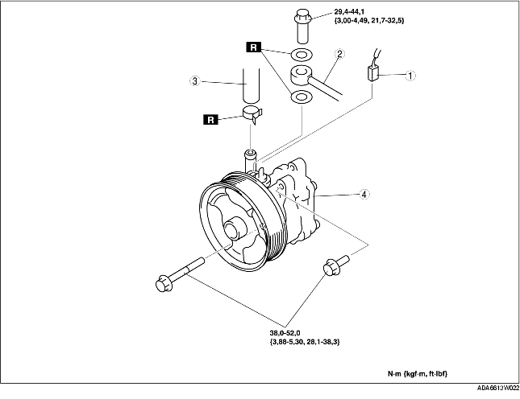

1. Déposer le cache inférieur et la bavette.
2. Déposer la courroie de transmission. (voir la section REMPLACEMENT DE COURROIE D'ENTRAÎNEMENT [ZJ, Z6].)
3. Déposer les différents éléments selon l'ordre indiqué dans le tableau.
4. Pour la repose, suivre l'ordre inverse de la dépose.

.
|
1
|
Connecteur de contacteur de pression
|
|
2
|
Tuyau de pression
|
|
3
|
Flexible d'aspiration
|
|
4
|
Pompe à huile de direction assistée
|